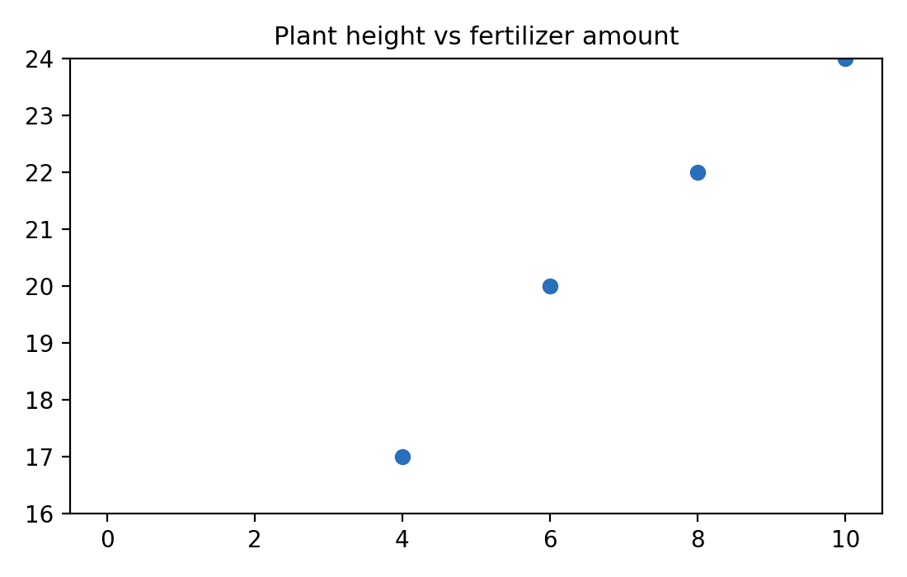
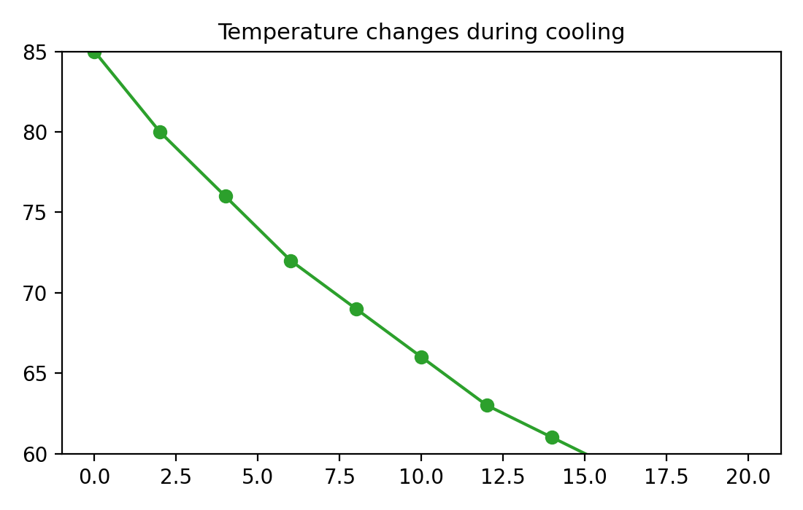
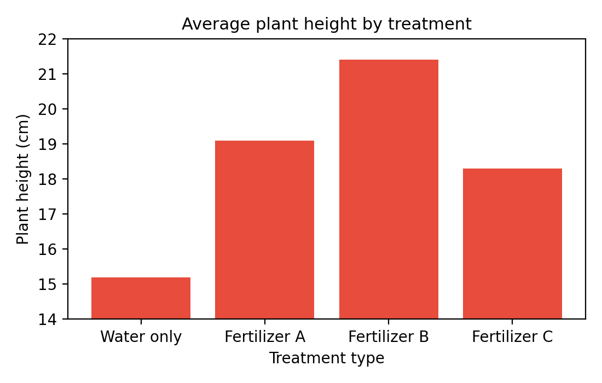
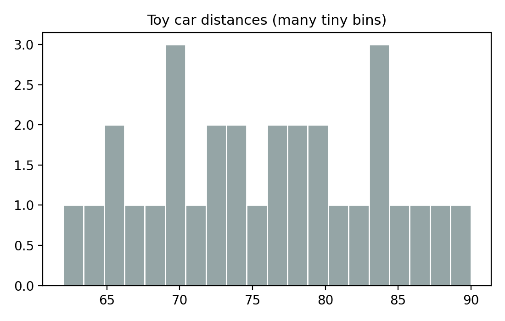
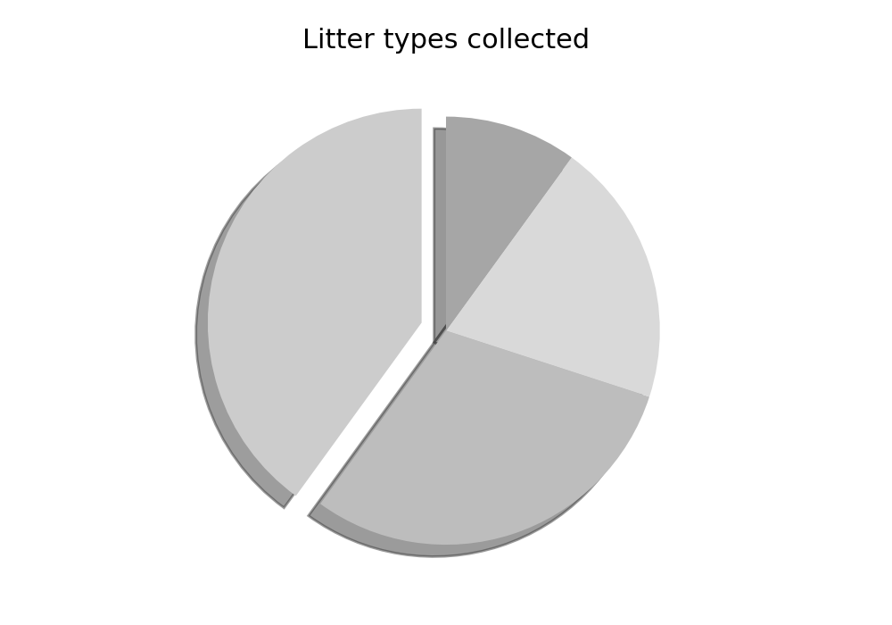
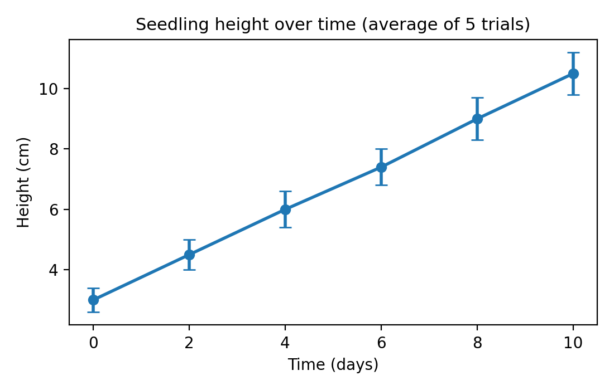
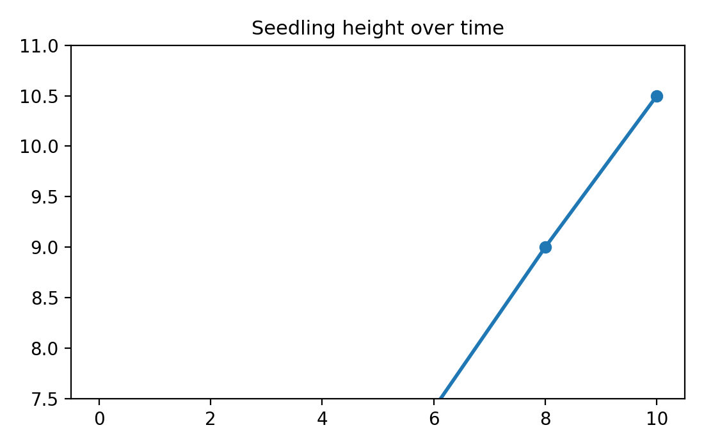
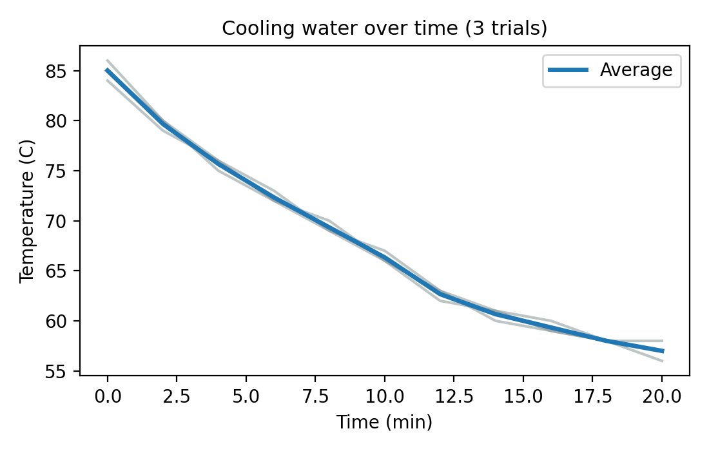
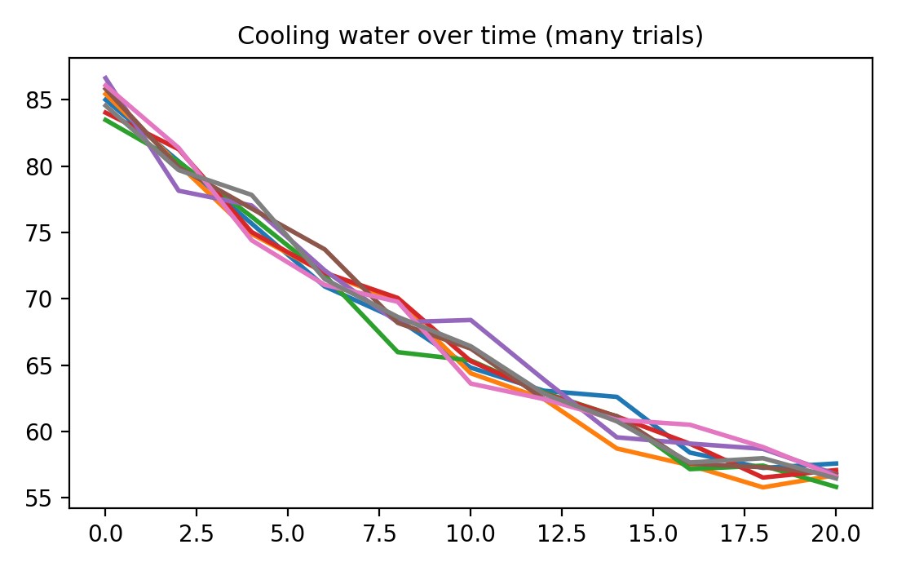
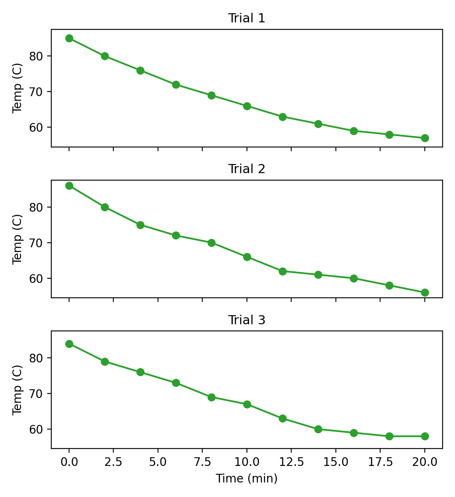

A friendly guide to choosing the right graph, labeling it clearly, and showing your results honestly.
Why Graphs Matter in a Science Fair
A graph is a picture of your results.
A good graph helps someone understand your experiment in 10 seconds.
A bad graph can confuse people even if your experiment was great.
Graphs are part of your evidence. Honest labels and honest scales help people trust what you found.
Variables: What Changed, What You Measured, What You Kept the Same
Simple definitions table
Variable type
What it means
Quick example
Manipulated (independent)
What you change on purpose
Amount of sunlight
Responding (dependent)
What you measure
Plant height
Controlled (constants)
What you keep the same
Same soil, same pot size
Trials/replicates
Repeating the test to be more reliable
Measure each plant 3 times
Example A: Sunlight and plant height
Manipulated: amount of sunlight each plant gets
Responding: plant height (cm)
Controlled: type of soil, pot size, water amount, plant species
Trials: measure several plants or measure the same plant multiple times
Example B: Ramp height and toy car distance
Manipulated: ramp height (cm)
Responding: distance the toy car rolls (cm)
Controlled: same car, same ramp surface, same release point
Trials: roll the car 3 or more times for each height
Mini-check
If I changed it on purpose -> manipulated
If I measured it -> responding
If I tried to keep it the same -> controlled
Why controls and trials matter: If you do not keep things the same, you cannot tell what really caused the change. Repeated trials help you see if a result is reliable or just a lucky accident.
Data Types: What Kind of Data Do You Have?
Continuous numbers
Numbers that go on a number line.
Examples: height, time, temperature.
Counts (discrete)
Whole numbers you count one by one.
Examples: number of seeds sprouted.
Categories (labels)
Names or groups, not numbers.
Examples: brand A/B/C, type of soil.
Time series
Measurements taken over time.
Examples: minute-by-minute or day-by-day data.
Continuous data can include decimals and can go anywhere on a number line. Discrete counts are whole numbers. Categories are names, not numbers, even if you can put them in order.
Choosing the Right Graph Type
Scatter Plot (with optional trendline)
Best for: two number-line variables (continuous) to see a relationship.
Axes: X = manipulated, Y = responding.
Good exampleWhy it works: Both axes are numbers with units, and the trendline helps you see the pattern.
Bad example

Why it is misleading: The data are the same, but the chopped y-axis makes the trend look steeper. The axes are also unlabeled.
Rule of thumb: If both variables are numbers, start with a scatter plot and label both axes.
Line Graph vs Scatter Plot (when to choose each)
Use a line graph when the X-axis is time or a true sequence (day-by-day, minute-by-minute).
Use a scatter plot when the X-axis is not time (like grams of fertilizer or ramp height).
A line implies the values flow from one point to the next. If that is not true, use scatter.
Line Graph (time series)
Best for: data measured over time.
Axes: X = time, Y = measurement.
Good exampleWhy it works: Time is in order on the X-axis, and the line shows how temperature changes.
Bad example

Why it is misleading: The y-axis is chopped, which makes changes look bigger than they are. The axes are also unlabeled.
Rule of thumb: If time is on the X-axis, use a line graph and keep the scale honest.
Bar Chart (compare categories)
Best for: comparing categories or named groups (non-numeric manipulated values).
Axes: X = categories, Y = numbers.
Good exampleWhy it works: Each bar is a different treatment (including a water-only control), and the y-axis shows plant height.
Bad example

Why it is misleading: The y-axis does not start at zero, so the differences look much bigger than they are.
Rule of thumb: Use bar charts for categories. If the manipulated variable is numeric and ordered (like grams), use a scatter or line chart instead.
Histogram (show distribution)
Best for: many measurements of the same thing.
Axes: X = measurement values, Y = how many times those values appear.
Good exampleWhy it works: Many measurements show the shape of the data and the most common values.
Bad example

Why it is misleading: The same data are split into too many tiny bins, which hides the overall pattern. The axes are also unlabeled.
Rule of thumb: Use a histogram when you have many measurements and choose a reasonable number of bins.
Pie Chart (parts of a whole)
Best for: showing how a whole is divided into categories that add up to 100%.
Axes: none; each slice is a percent of the total.
Good uses: percent of time spent on different tasks, percent of types of litter collected, percent of plants that survived vs died.
Not good for: trends over time, comparisons that are not parts of one whole, or data with many similar values.
Good exampleWhy it works: The chart shows one whole and each slice is labeled with a percent.
Bad example

Why it is misleading: The slice is exaggerated and there are no labels, so the viewer cannot tell the real sizes.
Rule of thumb: Use a pie chart only when all slices add to one whole and the differences are easy to see.
Multiple Measurements: How to Show Repeated Trials
When you measure the same thing many times, you have choices. Pick the one that best tells your story and fits your class rules.
Option A: Individual plots
Best when you have only a few trials or you want to show variation clearly.
Example: three lines on the same time graph, one for each trial.
Option B: Overlaid samples
Best when you have several trials and they follow a similar pattern.
Use light colors for trials and one bold average line.
Option C: Error bars
Best when you want a clean graph but still show how spread out the trials were.
Error bars show range or standard deviation (ask your teacher which to use).
Rule of thumb: If your class wants one clean graph, use the average with error bars. If they want to see every trial, plot each trial separately or overlay them lightly.
Error Bars Example (Matplotlib)
Good example

Why it works: The average is clear and the error bars show how spread out the trials were.
Bad example

Why it is misleading: The missing error bars hide variability, and the chopped axis makes changes look bigger.
Multiple Time Series Examples (Matplotlib)
Good example

Why it works: The individual trials are light, so the average stands out, and the axes are labeled.
Bad example

Why it is misleading: The lines overlap and the viewer cannot tell which line is which or how many trials there are.
Good alternative: Small multiples (one panel per trial)

Why it works: Each trial is easy to compare because all panels share the same scale.